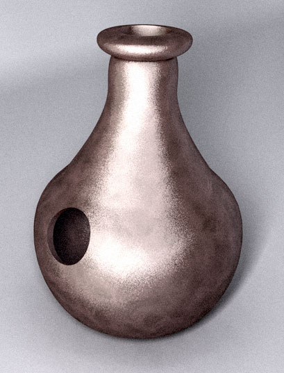
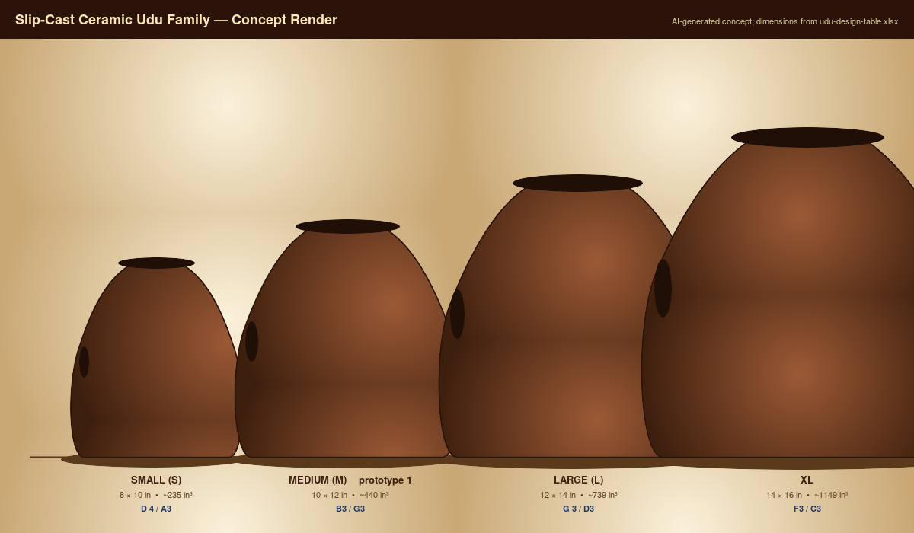
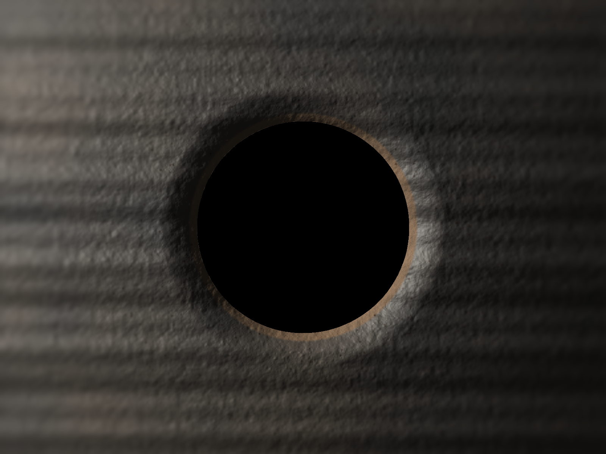

Status
This repo is a V5 explorer/readiness packet. The builder can inspect the workbook-driven udu family and the current dual-port vessel-resonator assumptions, but all tuning and fabrication-critical claims remain bounded by the current design table until measured prototypes update the evidence chain.
Current readiness
Explorer ready v4.1 baseline plus V5 authority bookkeeping.
Build authority
Not production ready CAD and drawings are starters until fired-volume and shrinkage data are measured.
Acoustic model
Measurement required Dual-port Helmholtz predictions need player-coupled validation.
Family Targets
| Model | Body | Volume | Mouth target | Side target | Current caveat |
|---|---|---|---|---|---|
| UDU-S | 8 x 10 in | 234.6 in3 | D#4 / 311.13 Hz | A3 / 220.00 Hz | Predicted sharp; port or shape-factor correction requires empirical UDU-P1 data. |
| UDU-M | 10 x 12 in | 439.8 in3 | B3 / 246.94 Hz | G3 / 196.00 Hz | Best current prototype target, still measurement-required after firing. |
| UDU-L | 12 x 14 in | 738.8 in3 | G#3 / 207.65 Hz | D3 / 146.83 Hz | Mouth prediction is flat; port scaling must be tested. |
| UDU-XL | 14 x 16 in | 1148.7 in3 | F3 / 174.61 Hz | C3 / 130.81 Hz | Pitch and structural risks remain high until measured; stand likely required. |
Visuals
These images are useful for orientation and storytelling. They are not dimensional references.

images/hero-concept.png - concept-only image, not fabrication authority.
images/family-overview-concept.png - family concept image, not dimensional evidence.
images/hero-render.png - hero concept render.
images/family-group.png - family-group concept render.
images/macro/side-hole-port.png - macro concept render.Remaining V5 Gates
| Deliverable | Status | Next evidence |
|---|---|---|
| Parametric CAD | Partial | Measured shrinkage, fired volume, port corrections, and final CAD details. |
| Vector design plates | Partial | DXF exports plus register rows with fabrication authority. |
| Hero render | Partial | Blender render derived from exported CAD/STL. |
| Exploded diagram | Missing | Component-offset diagram from the authority chain. |
| AI artistic shots | Partial | Optional concept outputs registered as non-authoritative. |
| Annotated print plate | Missing | Assembly plate with design-table callouts. |
| MCP provenance log | Partial | One row per real MCP tool session and artifact. |